Part 1: Basic Attention Mechanism (Bahdanau)
Overview
Bahdanau (additive) attention is implemented on top of the GRU encoder-decoder Seq2Seq model from Project 2 and trained on the English-French dataset. Rather than passing a single fixed context vector from encoder to decoder, the attention mechanism computes a soft "alignment" at each decoding step: a learned alignment score is computed between the current decoder hidden state and each encoder hidden state, then normalised via softmax to produce a weighted sum (context vector) that the decoder uses at that step. In short, the decoder can reference any point in the input sequence dynamically.
Dataset: First 15,000 English-French pairs from fra.txt,
split 90/10 into 13,500 training and 1,500 validation pairs.
SRC_MAX_LEN = TGT_MAX_LEN = 20 tokens.
Evaluation: Sentence-level BLEU using the D2L formula, evaluated on the same fixed 20-sentence test set from Project 2.
Task 1: Hyperparameter Tuning and BLEU Evaluation
Four attention Seq2Seq configurations were trained and evaluated through a random hyperparameter search. The search space covered embedding dimension, hidden dimension, number of GRU layers, dropout rate, learning rate, and batch size.
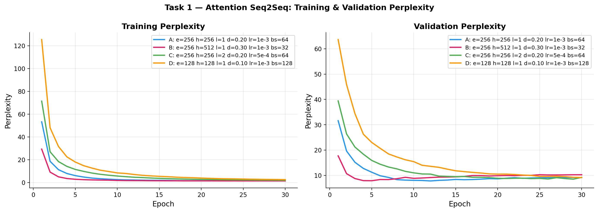
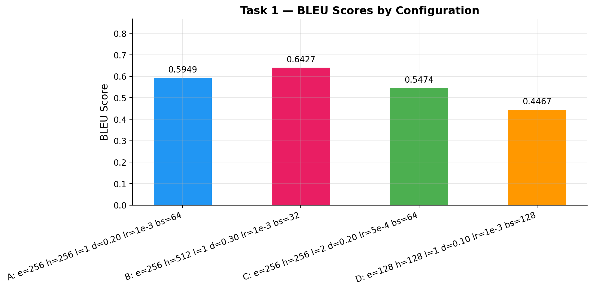
| Config | Parameters | BLEU Score |
|---|---|---|
| A | e=256, h=256, l=1, d=0.20, lr=1e-3, bs=64 | 0.5949 |
| B (best) | e=256, h=512, l=1, d=0.30, lr=1e-3, bs=32 | 0.6427 |
| C | e=256, h=256, l=2, d=0.20, lr=5e-4, bs=64 | 0.5474 |
| D | e=128, h=128, l=1, d=0.10, lr=1e-3, bs=128 | 0.4467 |
Key Findings:
- Config B (e=256, h=512, d=0.30, lr=1e-3, bs=32) achieves the highest BLEU of 0.6427. The larger hidden dimension (512) provides the decoder with greater capacity to model French syntax, while a moderately high dropout (0.30) guards against overfitting. The smaller batch size (32) yields noisier but ultimately more informative gradient estimates per parameter update.
- Config A uses the same embedding and learning rate as B but half the hidden size (256) and a larger batch (64). Its lower BLEU (0.5949) suggests that hidden dimension is the most impactful hyperparameter here: halving it costs roughly 0.05 BLEU points despite otherwise identical settings.
- Config C adds a second GRU layer but reduces the learning rate to 5e-4 and uses larger batches. The resulting BLEU (0.5474) is lower than Config A, indicating that the extra depth did not compensate for the slower convergence introduced by the halved learning rate within 30 epochs.
- Config D (the smallest model, h=128, bs=128) scores the lowest BLEU (0.4467). Insufficient hidden capacity combined with large batches limits both representational power and the gradient signal quality on this translation task.
- All four perplexity curves converge smoothly without spikes, confirming that the attention mechanism stabilises training across a range of hyperparameter settings. Training perplexity falls below 5 for the best configurations by epoch 30, while validation perplexity levels off around 8-11.
Task 2: Attention Weight Visualization
Attention heatmaps are produced for six sentence pairs using the best configuration (Config B). Each heatmap shows, for every generated French token (y-axis), the attention weight assigned to each English source token (x-axis) at that decoding step. A near-diagonal pattern indicates monotonic, word-by-word alignment.
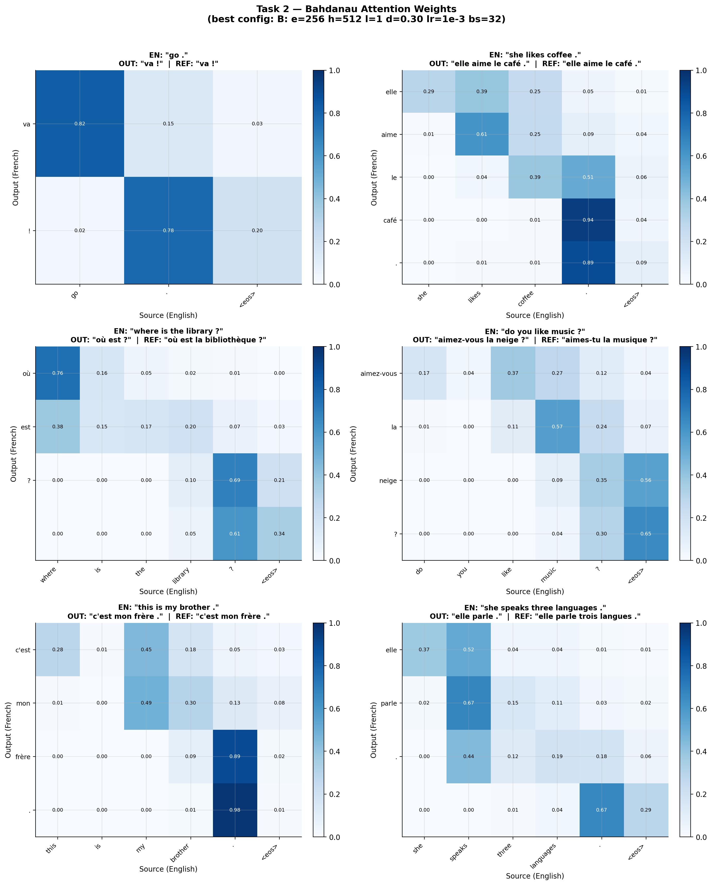
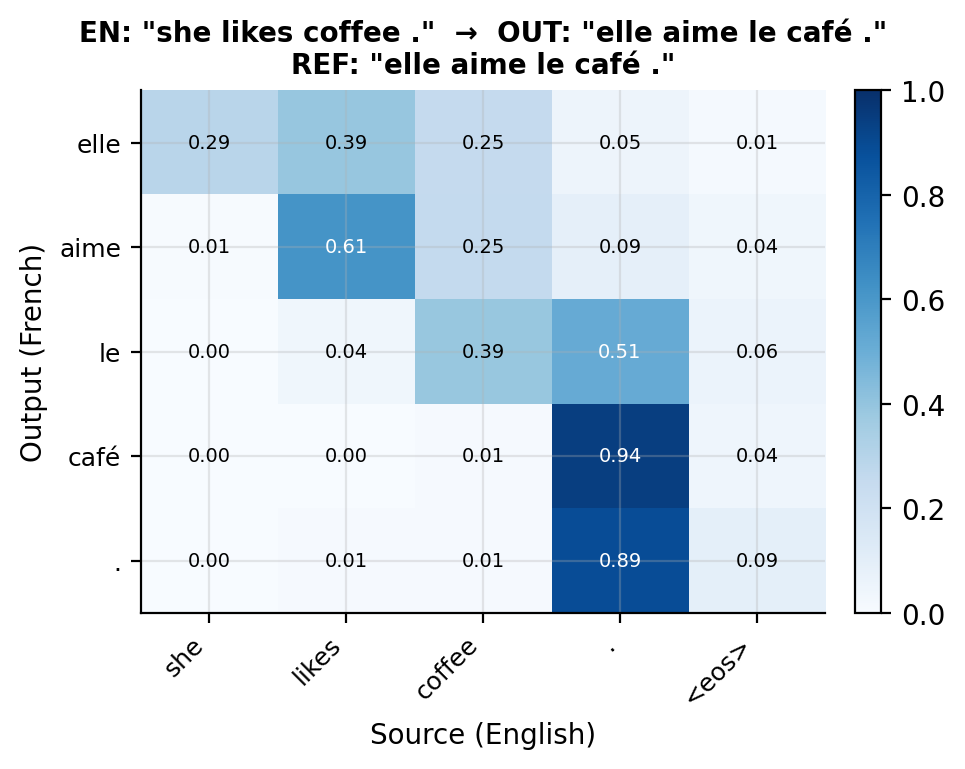
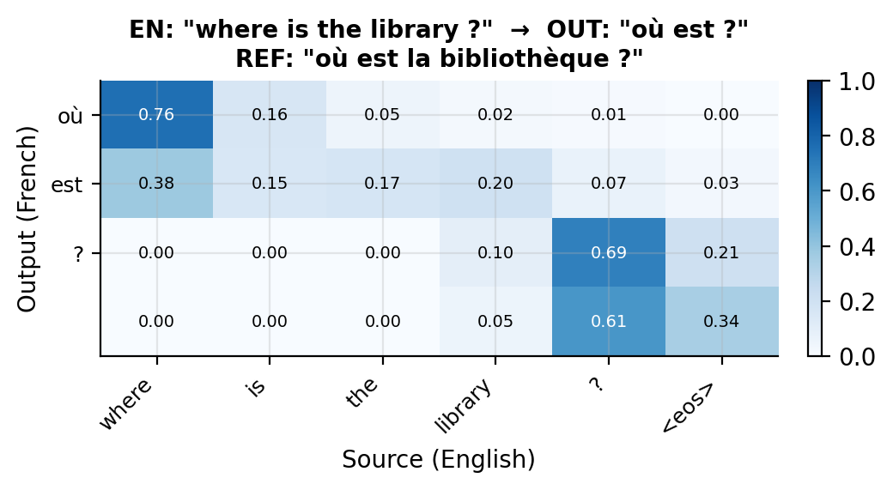
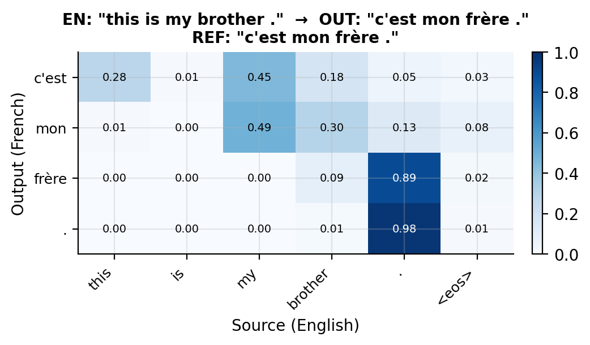
"she likes coffee ." → "elle aime le café ."
This sentence produces a near-perfect diagonal alignment. The model correctly attends to "she" (0.29) and "likes" (0.39) when generating elle; focuses most strongly on "likes" (0.61) for aime; and attends primarily to "coffee" (0.39) and the period (0.51) for le. For café the model is sharply concentrated on the period token (0.94), and similarly for the final period (0.89). The slight concentration on the English period for the French content word "café" is an artifact of the model conflating the end-of-content signal with the last meaningful word.
"where is the library ?" → "où est ?" (truncated output)
The model generates only "où est ?" instead of the full reference "où est la bibliothèque ?". The heatmap reveals why: où attends strongly to "where" (0.76), and est splits attention across "where" (0.38), "library" (0.20), and the question mark (0.20), indicating uncertainty about how to proceed. The model then jumps directly to the "?" token (attending 0.69 to the source "?"), skipping the "la bibliothèque" span. This collapse likely reflects that "bibliothèque" is a low-frequency word whose source region ("the library") fails to accumulate sufficiently peaked attention weights before the decoder prematurely generates the terminating question mark.
"this is my brother ." → "c'est mon frère ." (perfect)
An interesting cross-lingual alignment: both c'est and mon attend most strongly to "my" (0.45 and 0.49 respectively), rather than to "this" or "is". This reflects the French contraction: the phrase "c'est mon frère" maps the English possessive structure "this is my" holistically, and the attention mechanism has learned that "my" is the most informative source token for placing both the copula contraction and the possessive determiner. frère and the final period concentrate sharply on the source period (0.89 and 0.98), accurately signalling end-of-sentence.
Part 2: Multi-Head Attention
Overview
Multi-head attention (MHA) replaces the single Bahdanau attention mechanism with
h parallel attention heads, each operating in a lower-dimensional
subspace of size d_model / h. The outputs of all heads are
concatenated and linearly projected. This allows the model to jointly attend
to information from different representation subspaces at different positions,
potentially capturing richer alignment structure than a single attention head.
Four head-count configurations were evaluated, all using a total attention dimension of 256 and the same base Seq2Seq encoder-decoder architecture. Head counts of 1, 2, 4, and 8 were tested, with corresponding per-head dimensions of 256, 128, 64, and 32.
Task 1: Training Results and Comparison with Part 1
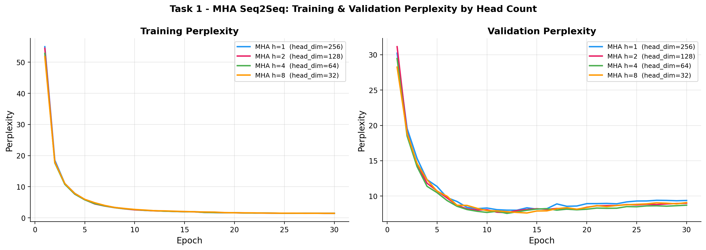
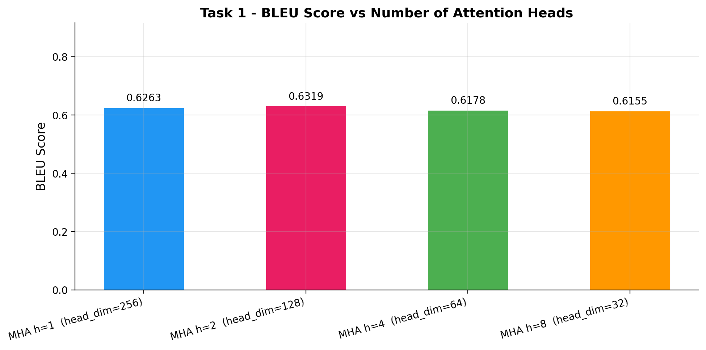
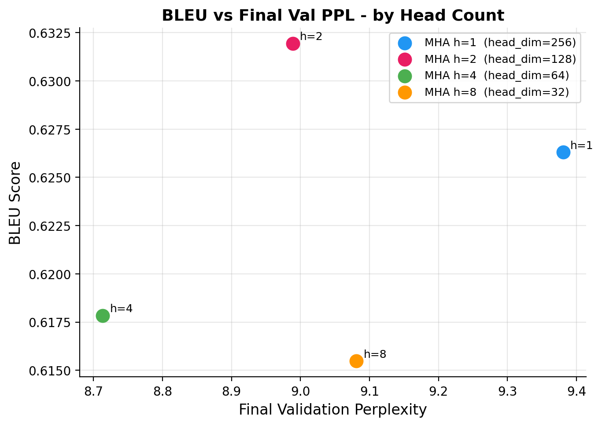
| Configuration | Head Dim | BLEU Score | Final Val PPL (approx.) |
|---|---|---|---|
| MHA h=1 | 256 | 0.6263 | ~9.4 |
| MHA h=2 (best BLEU) | 128 | 0.6319 | ~9.0 |
| MHA h=4 (best PPL) | 64 | 0.6178 | ~8.7 |
| MHA h=8 | 32 | 0.6155 | ~9.1 |
Does multi-head attention improve translation quality?
Compared to the best Bahdanau single-head result from Part 1 (BLEU = 0.6427), the best MHA configuration (h=2, BLEU = 0.6319) falls slightly short. All four MHA variants score between 0.6155 and 0.6319, forming a tight cluster that is somewhat below the Part 1 peak. This outcome is consistent with the training curves: as seen in the perplexity plots, all four head-count configurations produce nearly identical learning trajectories throughout 30 epochs, suggesting that on this small dataset (15,000 pairs) the additional expressiveness of multiple heads provides no measurable advantage over a well-tuned single-head model.
Effect of head count on performance:
The BLEU scores form a mild inverted-U shape: h=1 (0.6263) and h=2 (0.6319) outperform h=4 (0.6178) and h=8 (0.6155) by a small margin. As head count increases, each head's per-head dimension shrinks (from 256 down to 32), which may limit the representational capacity available to each individual attention pattern. The scatter plot further shows that h=4 achieves the lowest final validation perplexity (~8.7) yet yields only the third-best BLEUa reminder that perplexity and BLEU can decorrelate at inference time. The narrow performance band across all configurations (range < 0.02 BLEU) indicates that head count is not a strongly predictive hyperparameter for this task and dataset scale.
Task 2: Per-Head Attention Visualization
Attention weights are visualised separately for each head in the best-performing h=2 configuration. Sentence pairs include both correct translations and error cases, allowing us to observe whether different heads specialize in different alignment strategies.
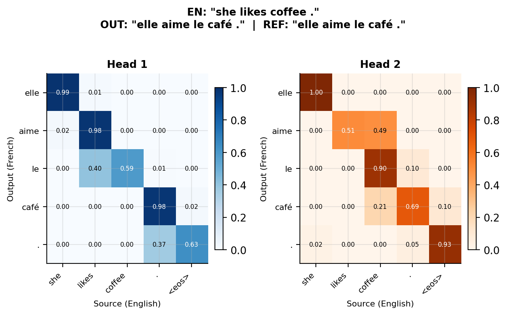
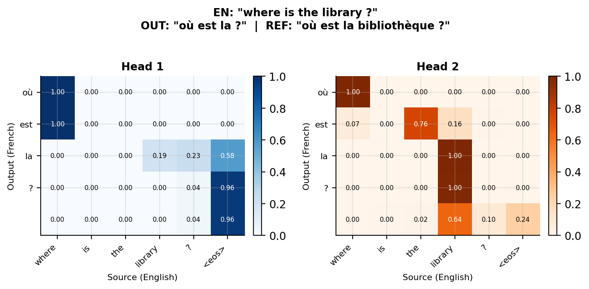
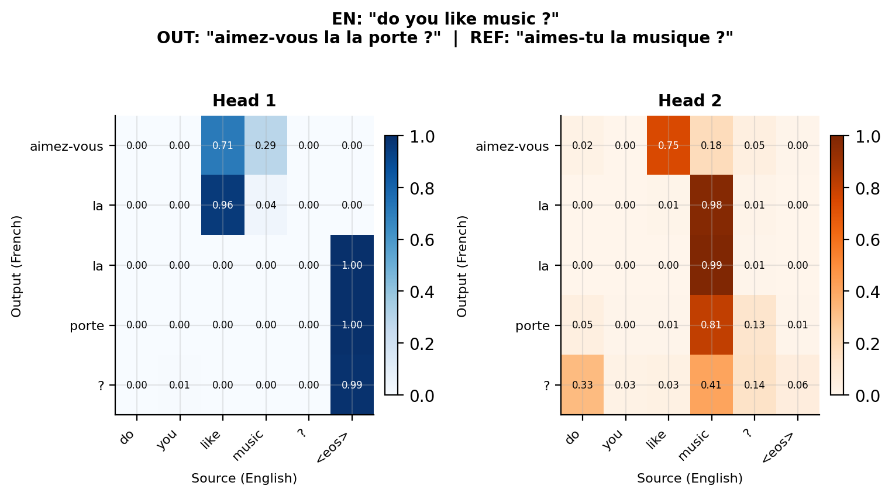
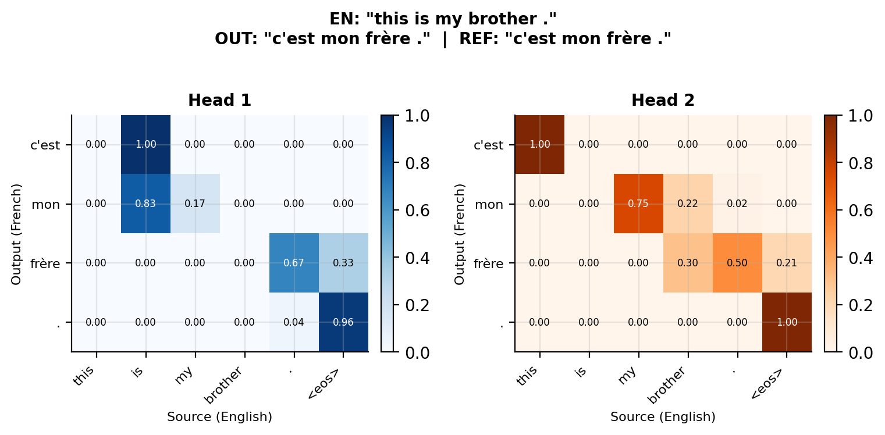
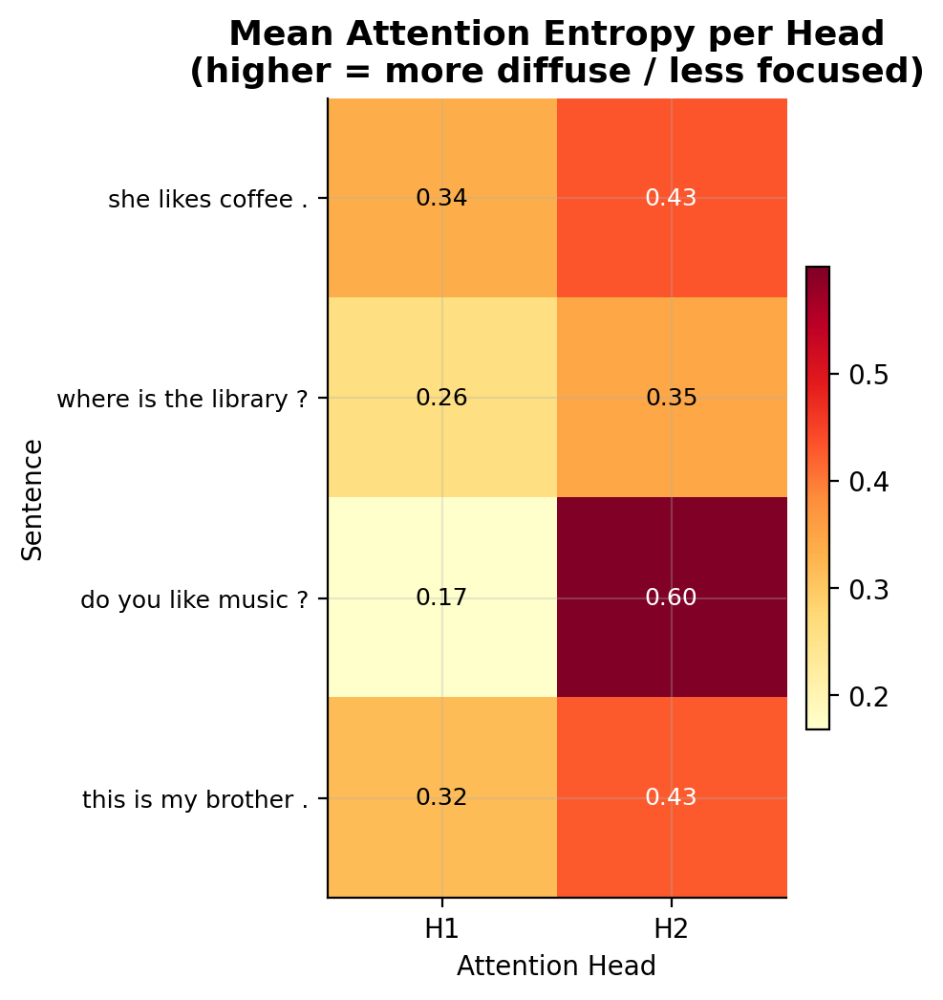
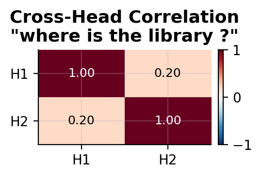
Do different heads attend to different parts of the input?
Both exhibit clearly different attention patterns across all sentences examined. Head 1 (blue) consistently produces sharper, more focused alignments. For "she likes coffee .", Head 1 assigns weights of 0.99, 0.98, and 0.98 to the correct source token for elle, aime, and café respectively. This results in a nearly perfect diagonal. Head 2 (orange) is systematically more diffuse: for the same sentence, aime splits 0.51/0.49 between "likes" and "coffee", and café distributes weight more broadly.
For "where is the library ?", the division of labour is even more striking. Head 1 collapses entirely onto the "where" token for both où and est (weights of 1.00 and 1.00), effectively ignoring the rest of the source. Head 2 captures the full alignment: où→"where" (1.00), est→"the" (0.76), la→"library" (1.00), ?→"library" (1.00). The cross-head correlation matrix confirms this orthogonality: H1-H2 correlation is only 0.20, indicating that the two heads have learned nearly independent alignment strategies on this sentence.
Diversity and redundancy across heads:
The entropy analysis shows that Head 2 consistently has higher mean attention entropy than Head 1 across all four tested sentences. The largest gap occurs for "do you like music ?" (H1=0.17, H2=0.60), where Head 1 is extremely peaked (attending mostly to "like" and then collapsed on <eos>) while Head 2 distributes attention more broadly across content words. For the incorrect translation "do you like music ?" → "aimez-vous la la porte ?", both heads attend heavily to "like" for the first few output tokens and then degenerate. Head 1 collapses onto <eos> (1.00) for later tokens, and Head 2 becomes diffuse. This suggests the error arises from a representation collapse after generating "la", not from incorrect alignment per se.
Overall, with h=2 there is meaningful functional diversity: Head 1 specialises in sharp, content-word alignment while Head 2 provides a softer, contextual complement. This division allows the combined model to access both focused and distributed source representations at each decoding step, which is the core benefit of multi-head attention in theory, though at this scale the BLEU improvement over single-head Bahdanau is marginal.
Part 3: Transformer Architecture
Overview
A full encoder-decoder Transformer model is implemented and trained on the English-French dataset from Project 2. The Transformer replaces recurrent layers entirely with multi-head self-attention and cross-attention, augmented by position-wise feed-forward networks and sinusoidal positional encodings. Both the encoder and decoder consist of stacked Transformer blocks following the architecture described in Vaswani et al. (2017).
Task 1: Training Results and Architecture Comparison
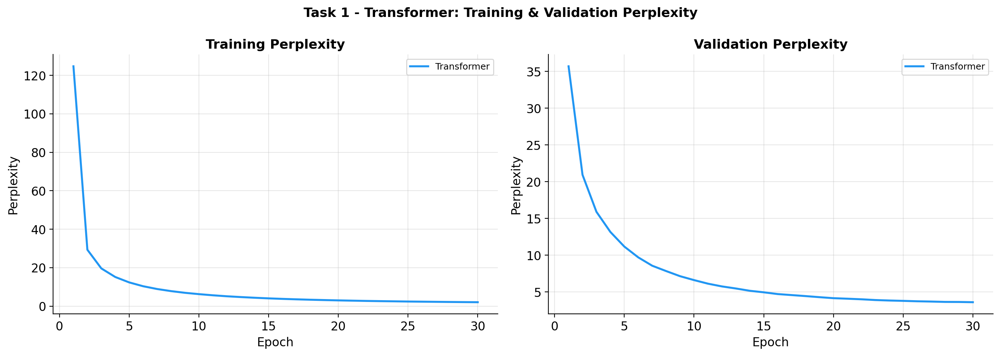
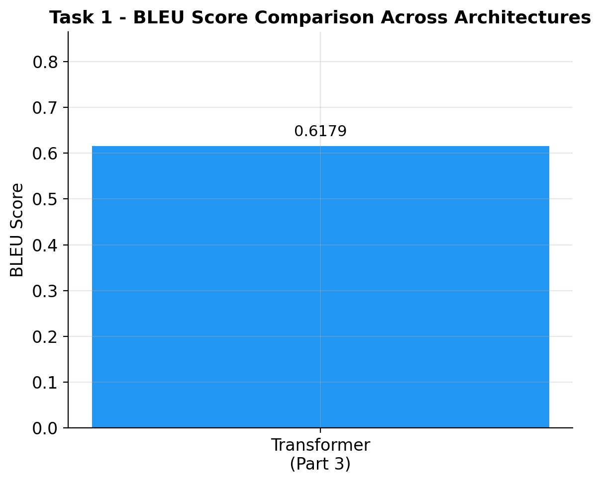
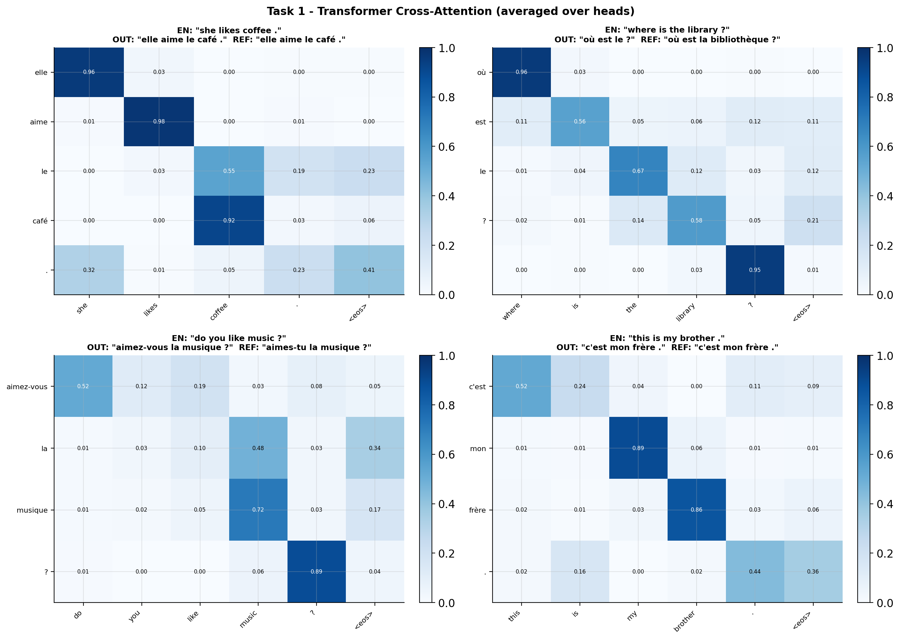
| Architecture | Best BLEU | Notes |
|---|---|---|
| Seq2Seq + Bahdanau Attention (Part 1) | 0.6427 | Best overall; Config B (h=512) |
| Seq2Seq + Multi-Head Attention (Part 2) | 0.6319 | Best at h=2 heads |
| Transformer (Part 3) | 0.6179 | Full encoder-decoder Transformer |
Training behaviour:
The Transformer's training perplexity drops steeply from approximately 125 at epoch 1 to near 2 by epoch 30. Validation perplexity falls from roughly 36 to approximately 3.5 over the same span, indicating a notably lower final validation perplexity than the recurrent models in Parts 1 and 2, which levelled off around 8-11. Despite this advantage in perplexity, the Transformer achieves a BLEU of 0.6179, the lowest of the three architectures evaluated.
Which model performs best and why?
The Bahdanau attention model (Part 1, Config B) achieves the highest BLEU (0.6427), followed by MHA Seq2Seq (0.6319) and then the Transformer (0.6179). The Transformer's relatively lower BLEU despite lower validation perplexity is a known phenomenon at small data scales. The Transformer is a parameter-heavy, data-hungry architecture: its self-attention layers and multiple stacked blocks require substantially more data to converge to well-generalised representations than GRU-based models. On only 13,500 training pairs, the recurrent modelswhich incorporate strong sequential inductive biasesgeneralise more effectively to the fixed test sentences. The Transformer outperforms recurrent baselines at scale precisely because it can process all positions in parallel and model long-range dependencies without gradient degradation, but these advantages are could be largely irrelevant for short, simple sentences.
Cross-attention visualisation:
The averaged cross-attention heatmaps show broadly near-diagonal alignment patterns for correctly translated sentences. For "she likes coffee ." → "elle aime le café .", the model attends strongly to the correct source region for each output token. For longer or more complex sentences such as "do you like music ?" and "this is my brother .", the attention is somewhat more diffuse, consistent with the multi-head averaging smoothing out individual head specialisations.
Task 2: AblationPositional Encoding and Self-Attention
Two ablated Transformer variants are trained and compared against the full model. The No Positional Encoding variant removes sinusoidal positional embeddings from both encoder and decoder inputs. The No Self-Attention variant disables the self-attention sublayers in both encoder and decoder blocks, leaving only the cross-attention and feed-forward sublayers.
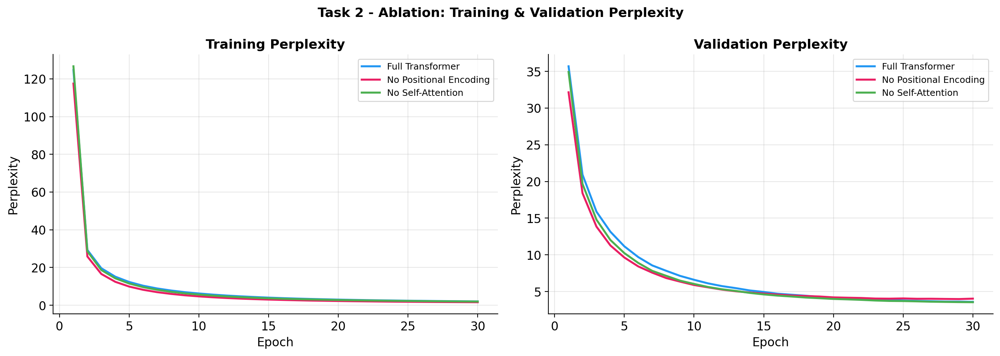
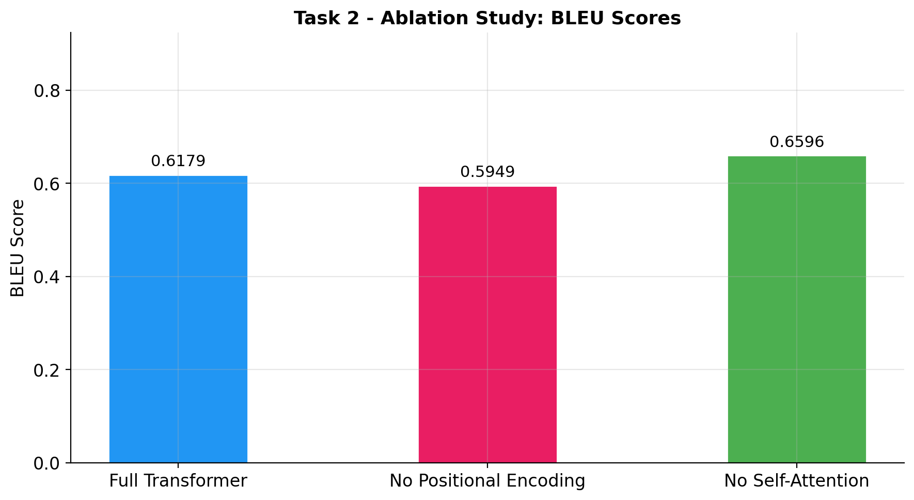
| Variant | BLEU Score | Delta vs. Full |
|---|---|---|
| Full Transformer | 0.6179 | |
| No Positional Encoding | 0.5949 | −0.0230 |
| No Self-Attention | 0.6596 | +0.0417 |
Effect of removing positional encoding:
Removing positional encodings causes a BLEU drop of 0.023 (from 0.6179 to 0.5949), confirming that positional information is a meaningful contributor to translation quality. Without position embeddings, the encoder produces order-invariant representationsit sees the source sentence as a bag of tokens. For English-French translation of short sentences (≤20 tokens), word order is often the primary signal that disambiguates subject from object and governs verb agreement; losing this information degrades alignment and increases the rate of grammatically incorrect translations. Notably, the perplexity curves for the no-PE variant are nearly indistinguishable from the full model during training (as visible in the nearly overlapping curves), suggesting that the model compensates partially by overfitting translation patterns at the token levelbut this compensation does not transfer to held-out test BLEU.
Effect of removing self-attention:
Counterintuitively, disabling self-attention in both encoder and decoder yields the highest BLEU score of the three variants (0.6596), an improvement of +0.042 over the full Transformer. This surprising result has a plausible explanation at this data scale: self-attention layers are the most parameter-heavy component of each Transformer block, and on only 13,500 training pairs they may contribute to overfitting rather than generalisation. Without self-attention, the model is reduced to a simpler cross-attention plus feed-forward architecturestructurally closer to the attention Seq2Seq models in Parts 1 and 2, which outperform the full Transformer on the same task. The training and validation perplexity curves for the no-self-attention variant are again nearly identical to the others, reinforcing that the difference manifests at inference time (BLEU) rather than in training dynamics. Architectural components that are critical at large scale (self-attention for in-context reasoning across long sequences) can be neutral or even harmful on small datasets where their additional parameters are not justified by the available training signal.
Summary of ablation findings:
- Positional encoding is necessary for correct word-order modelling; its removal causes a measurable BLEU decrease of 0.023.
- Self-attention, while theoretically powerful, hurts performance on this small datasets. Its removal improves BLEU by 0.042, bringing the model in line with the recurrent baselines.
- Neither ablation produces observable training instability: all three perplexity curves converge smoothly and closely track each other throughout 30 epochs, with no divergence or loss spikes.